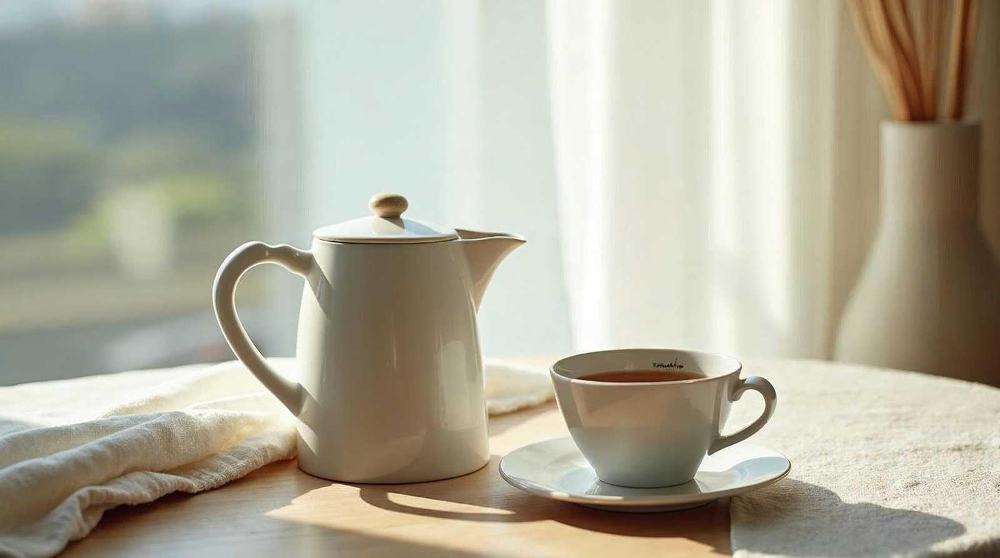
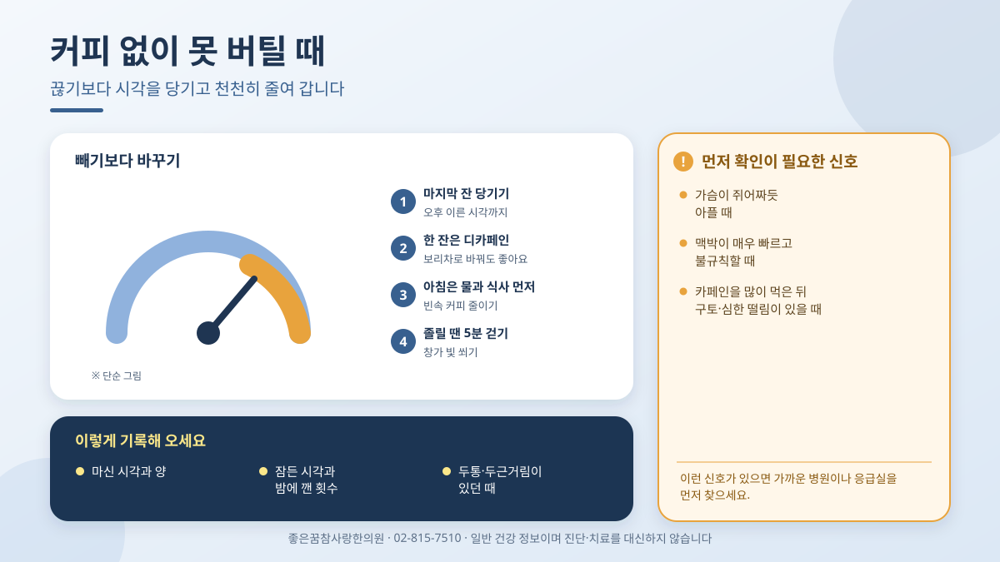

이종호 한의사 감수좋은꿈참사랑한의원 대표원장 (한의사 면허번호 19769)발행 2026-11-26 · 수정 2026-11-26
이 글의 차례
출근길 지하철역 앞 카페에 줄이 깁니다. 그 줄에 서 있는 동안에도 머리는 아직 반쯤 잠들어 있습니다. 첫 모금을 마시고 나서야 비로소 하루가 시작되는 느낌이 듭니다. 점심 뒤에 한 잔, 오후 회의 전에 또 한 잔. 어느새 커피 없이는 하루를 버티기 어렵다는 생각이 듭니다.
진료실에서 "커피를 줄여야 하는 건 아는데 잘 안 돼요"라는 말씀을 자주 듣습니다. 줄여 보려고 한 날에는 머리가 지끈거리고, 일이 손에 잡히지 않아 결국 다시 커피를 찾게 된다고 하십니다. 의지가 약해서가 아니라, 몸이 카페인에 맞춰 리듬을 바꿔 놓았기 때문인 경우가 많습니다.
커피 자체가 나쁜 것은 아닙니다. 적당히 즐기는 커피는 하루의 작은 쉼이 되기도 합니다. 다만 커피가 쉼이 아니라 버팀목이 되었을 때, 그 아래에 무엇이 가려져 있는지 한 번쯤 들여다볼 필요가 있습니다.
이 글에서는 카페인 의존이 어떻게 생기는지, 잠과 피로와 어떻게 맞물리는지, 그리고 무리 없이 줄여 가는 순서와 한의원에서 함께 살피는 점을 차례로 말씀드리겠습니다.
카페인 의존은 어떤 상태를 말하나요?
카페인 의존은 커피나 에너지 음료를 마시지 않으면 일상이 힘들 만큼 몸과 마음이 카페인에 기대게 된 상태를 말합니다. 마시는 양이 조금씩 늘고, 줄이려 해도 잘 안 되며, 거르면 두통이나 피로, 짜증이 찾아오는 모습이 함께 나타납니다.
얼마나 마셔야 의존이라는 정해진 숫자는 없습니다. 같은 양을 마셔도 몸이 받아들이는 정도는 사람마다 다릅니다. 그래서 잔 수보다 커피 없이 하루를 보낼 수 있는지, 커피를 거르면 어떤 변화가 생기는지를 함께 보는 것이 더 도움이 됩니다.
스스로 이런 질문을 해 보세요. 아침 커피를 거르면 머리가 아픈가요? 오후에 커피를 마시지 않으면 일을 이어 가기 힘든가요? 잠들기 어려운데도 오후 커피를 끊지 못하나요? 여러 개에 고개가 끄덕여진다면 한번 살펴볼 때입니다.
왜 점점 더 많이 마시게 될까요
카페인은 졸음 신호를 잠시 가려 주는 역할을 합니다. 우리 몸은 깨어 있는 동안 졸음을 알리는 물질이 조금씩 쌓이는데, 카페인은 이 신호가 전달되는 자리를 막아 피로를 덜 느끼게 합니다. 피로가 사라진 것이 아니라 잠시 가려진 것입니다.
이 상태가 매일 이어지면 몸은 신호를 받는 자리를 더 늘려 균형을 맞추려 합니다. 그러면 같은 양의 커피로는 예전만큼 맑아지지 않고, 자연스럽게 한 잔이 두 잔이 됩니다. 커피를 거른 날에는 가려져 있던 졸음과 피로가 한꺼번에 몰려옵니다.
여기에 잠 부족이 더해지면 순환이 단단해집니다. 오후 커피로 밤잠이 얕아지고, 얕은 잠 때문에 아침이 더 힘들어 다시 커피를 찾습니다. 그래서 카페인 의존을 이야기할 때는 거의 늘 잠 이야기가 함께 나옵니다.
카페인은 몸에서 얼마나 머무나요?
커피를 마시고 나서 카페인이 몸에서 절반으로 줄어드는 데 보통 몇 시간이 걸리고, 사람에 따라 더 오래 걸리기도 합니다. 오후 세 시에 마신 커피가 밤 열한 시에도 몸에 꽤 남아 있을 수 있다는 뜻입니다.
임신 중이거나 일부 약을 드시는 분, 나이가 드신 분은 카페인이 더 오래 머무는 편입니다. 같은 커피를 마셔도 예전과 달리 잠이 얕아졌다면, 몸이 카페인을 처리하는 속도가 달라졌을 가능성도 함께 생각해 볼 수 있습니다.
그래서 진료실에서는 몇 잔을 드시는지보다 마지막 잔을 몇 시에 드시는지를 더 중요하게 여쭙니다. 마지막 잔의 시각을 당기는 것만으로도 밤잠이 달라지는 분이 적지 않습니다.
커피가 가리고 있는 것들
커피에 기대는 마음 밑에는 다른 이유가 숨어 있는 경우가 많습니다. 커피를 줄이기 전에 이 부분을 먼저 살펴보면 줄이는 과정이 한결 수월해집니다.
- 잠드는 시각이 늦거나 자주 깨서 잠이 모자란 경우
- 아침을 거르거나 점심을 급하게 먹어 기운이 떨어지는 경우
- 빈혈이나 갑상선처럼 피로를 키우는 상태가 있는 경우
- 할 일이 몰려 마음이 늘 쫓기는 경우
- 기분이 가라앉아 무언가로 버텨야 하는 경우
이 가운데 하나라도 해당한다면, 커피를 줄이는 것과 함께 그 이유를 같이 다듬어야 오래갑니다. 이유는 그대로 둔 채 커피만 끊으면 금세 다시 찾게 되기 쉽습니다.
몸이 보내는 신호들
카페인이 몸에 맞지 않거나 너무 많을 때 나타나는 신호가 있습니다. 가슴이 두근거리고, 손이 떨리며, 속이 쓰리고, 소변이 잦아집니다. 이유 없이 초조하거나 예민해지는 느낌도 흔히 말씀하시는 모습입니다.
빈속에 마시는 커피는 속쓰림을 키우기 쉽습니다. 아침을 거르고 커피만 마시는 습관이 있다면, 작은 빵이나 바나나처럼 가볍게라도 먼저 드시고 커피를 마셔 보세요. 속이 한결 편안해지는 경우가 많습니다.
에너지 음료는 카페인에 당분이 더해져 있어서 마시는 순간 기운이 확 오르다가 금세 떨어지는 느낌을 주기 쉽습니다. 커피보다 양을 가늠하기 어려운 경우도 있으니, 마신다면 성분표의 카페인 양을 한 번 확인해 보시길 권합니다.

금단 증상은 어떻게 넘기나요?
커피를 갑자기 끊으면 하루 이틀 사이에 머리가 지끈거리고, 졸리며, 집중이 안 되고, 짜증이 나는 금단 증상이 찾아올 수 있습니다. 대개 며칠에서 일주일 사이에 가라앉지만, 이 시기가 힘들어 다시 커피를 찾게 되는 분이 많습니다.
그래서 저는 갑자기 끊기보다 천천히 줄이는 쪽을 권합니다. 며칠 간격으로 반 잔씩 줄이거나, 한 잔을 디카페인으로 바꾸는 식입니다. 몸이 천천히 적응할 시간을 주면 금단 증상도 훨씬 가볍게 지나가는 경우가 많습니다.
줄이는 기간에는 물을 충분히 드시고, 잠을 조금 더 챙기시면 좋습니다. 머리가 지끈거릴 때 어깨와 목을 가볍게 풀고 바깥 공기를 쐬며 걷는 것도 도움이 됩니다.
줄이는 동안 낮 졸음은 어떻게 다루나요?
커피를 줄이기 시작하면 처음 며칠은 오후 졸음이 더 크게 느껴질 수 있습니다. 그동안 가려져 있던 피로가 드러나는 것이라 이상한 일이 아닙니다. 이때 다시 커피를 찾기보다 잠깐 자리에서 일어나 몸을 움직여 보세요.
창가에서 바깥 빛을 쐬며 2~3분 서 있거나, 계단을 한두 층 오르내리거나, 찬물로 손과 얼굴을 씻는 것만으로도 머리가 조금 맑아집니다. 낮잠이 필요하다면 오후 세 시 전에 20분 안쪽으로 짧게 자는 것이 밤잠을 덜 흔듭니다.
이 시기에 밤잠을 30분만 더 챙겨도 낮 졸음이 확연히 줄어드는 분이 많습니다. 줄이는 기간만큼은 저녁 약속을 조금 줄이고 일찍 눕는 날을 늘려 보세요.
커피를 마시는 이유를 나눠 보면
커피를 찾는 순간을 가만히 들여다보면 이유가 제각각입니다. 졸려서 마시는 때도 있지만, 습관처럼 손이 가는 때, 쉬는 시간의 핑계로 마시는 때, 동료와 대화하려고 마시는 때도 있습니다.
졸려서 마시는 커피는 잠을 챙기는 쪽으로, 습관으로 마시는 커피는 따뜻한 물이나 보리차로, 쉼과 대화를 위한 커피는 디카페인으로 바꿔 보는 식으로 나눠 접근하면 훨씬 수월합니다. 이유마다 바꿀 것이 다르다는 점을 기억해 주세요.
약을 드시거나 임신을 준비 중이라면
드시는 약 가운데는 카페인과 함께 먹을 때 두근거림이나 잠의 변화가 커질 수 있는 것이 있습니다. 감기약, 두통약, 일부 다이어트 보조제에도 카페인이 들어 있는 경우가 있으니 약국에서 확인해 보시길 권합니다.
임신을 준비 중이거나 임신 중이라면 카페인 양을 더 신경 써서 줄이시는 것이 좋습니다. 이 경우 한의원에 오시기 전 먼저 알려 주시고, 구체적인 기준은 다니시는 산부인과와 상의해 정하세요.
계절과 일정에 따라 달라지는 커피
겨울에는 해가 늦게 뜨고 일찍 져서 아침에 몸이 더 무겁게 느껴집니다. 그래서 겨울이 되면 커피 잔 수가 슬며시 늘었다는 분이 많습니다. 아침에 일어나 커튼을 활짝 열고 밝은 빛을 먼저 쐬면 몸이 깨어나는 데 도움이 됩니다.
시험 기간, 결산 시기, 큰 프로젝트처럼 바쁜 시기에도 커피가 늘기 쉽습니다. 이런 시기에는 줄이기보다 마지막 잔의 시각만 지키는 것을 목표로 삼고, 바쁜 시기가 지나면 다시 천천히 줄여 가시면 됩니다.
먼저 이렇게 여쭙니다
처음 오시면 대략 이런 순서로 여쭙니다. 미리 떠올려 오시면 이야기가 수월해집니다.
- 하루에 커피, 차, 에너지 음료를 몇 잔, 몇 시에 드시나요?
- 마지막 잔은 보통 몇 시인가요?
- 커피를 거른 날에는 어떤 변화가 있나요?
- 잠드는 시각과 깨는 시각, 밤에 깨는 횟수는 어떠신가요?
- 아침과 점심 식사는 어떻게 하시나요?
- 두근거림, 속쓰림, 손 떨림이 있으신가요?
정확한 숫자가 기억나지 않으셔도 괜찮습니다. 대략적인 하루 흐름만 말씀해 주셔도 이야기를 시작하기에 충분합니다.
일상에서 먼저 해 볼 수 있는 것
커피를 줄이는 일은 빼기보다 바꾸기로 접근하면 한결 쉽습니다. 커피가 맡고 있던 역할을 다른 것으로 조금씩 옮겨 가는 방식입니다.
- 마지막 잔의 시각을 오후 이른 시각으로 당기기
- 하루 한 잔을 디카페인이나 보리차로 바꾸기
- 큰 컵을 작은 컵으로 바꾸기
- 아침에는 커피보다 먼저 물 한 잔과 간단한 식사 챙기기
- 오후 졸음이 올 때 커피 대신 5분 걷기
- 잠드는 시각을 일정하게 맞추기
한 번에 하나만 바꾸시고, 일주일쯤 지켜본 뒤 다음 것을 더하세요. 천천히 가는 쪽이 오래갑니다. 실패한 날이 있어도 다음 날 다시 이어 가면 됩니다.
오후 졸음은 점심 식사의 양과도 관련이 있습니다. 점심을 너무 많이 먹거나 단 음식 위주로 먹으면 오후에 졸음이 더 크게 찾아오기 쉽습니다. 점심을 조금 가볍게 하고 식사 뒤 잠깐 걷는 것만으로도 오후 커피가 덜 당긴다는 분이 많습니다.
한의원에서 함께 살필 수 있는 경우
- 커피를 줄이면 두통과 피로가 심해 다시 찾게 되는 경우
- 오후 커피 때문에 잠이 얕고 새벽에 자주 깨는 경우
- 커피를 마시면 가슴이 두근거리고 속이 쓰린 경우
- 아침에 일어나기 너무 힘들고 오전 내내 머리가 무거운 경우
- 늘 피곤해서 무언가로 버텨야 한다는 느낌이 드는 경우
좋은꿈참사랑한의원에서는 맥을 짚고 잠, 소화, 대소변, 손발 온도를 여쭌 뒤 피로가 어디에서 비롯되는지 함께 살핍니다. 진찰한 내용을 바탕으로 침, 온열 관리, 한약 상담 가운데 지금 상태에 맞는 것을 정합니다.
한약을 상의할 때는 드시는 약과 영양제를 모두 확인하고 신중하게 정합니다. 피로가 오래 이어지고 혈액 검사가 필요해 보이면 내과 진료를 함께 받으시도록 안내합니다.
이렇게 기록해 오시면 상담이 쉬워집니다
일주일 정도 간단히 적어 오시면 커피와 잠, 피로의 연결이 한눈에 보입니다.
- 커피, 차, 에너지 음료를 마신 시각과 양
- 잠든 시각과 깬 시각, 밤에 깬 횟수
- 피로나 졸음이 몰려온 시간대
- 두통, 두근거림, 속쓰림이 있었던 때
- 식사한 시각과 거른 끼니
기록을 나란히 놓고 보면, 오후 늦은 커피를 마신 날 잠이 얕았는지, 아침을 거른 날 커피가 더 당겼는지 같은 흐름이 보이기 시작합니다.
커피와 다시 편안한 사이가 되려면
커피를 완전히 끊는 것이 목표일 필요는 없습니다. 아침 한 잔을 여유 있게 즐기고, 오후에는 커피 없이도 버틸 만한 상태가 되는 것만으로도 충분히 좋은 변화입니다.
커피가 버팀목에서 다시 즐거움으로 돌아오면, 한 잔의 맛도 예전보다 더 또렷하게 느껴집니다. 줄이는 과정에서 잠이 조금씩 깊어지고 아침이 가벼워지는 변화를 함께 확인해 보시면 좋겠습니다.
이번 주에는 마지막 잔의 시각을 한 시간만 당겨 보세요. 다음에 오시면 일주일 동안의 기록을 함께 펼쳐 보며 그다음 걸음을 같이 정하겠습니다.
이런 증상은 먼저 확인이 필요합니다
- 가슴이 쥐어짜듯 아프거나 맥박이 매우 빠르고 불규칙하게 뛰며 숨이 찬 경우
- 에너지 음료나 카페인 알약을 많이 먹은 뒤 심한 손 떨림과 구토가 있고 정신이 흐려지는 경우
이런 신호가 있으면 한의원보다 가까운 병원이나 응급실을 먼저 찾으세요.
함께 읽으면 좋은 글
- 커피를 끊거나 줄였더니 머리가 지끈거리는 카페인 금단 두통은 왜 생기고 어떻게 넘기나요?
- 마감을 앞둔 개발자·디자이너가 커피에 기대며 밤을 새울 때 잠은 어떻게 정리하나요?
- 커피와 에너지 음료로 버티다 밤에 잠이 안 올 때는 어떻게 하나요?
- 충분히 쉬어도 몸이 늘 피곤한 만성피로는 어떤 점을 살펴보나요?
- 피곤한 것과 졸린 것은 어떻게 구분해서 말하면 좋을까요?

여쭙는 것
- 하루에 커피, 차, 에너지 음료를 몇 잔, 몇 시에 드시나요?
- 마지막 잔은 보통 몇 시인가요?
- 커피를 거른 날에는 어떤 변화가 있나요?
생활에서 해 볼 것
- 마지막 잔의 시각을 오후 이른 시각으로 당기기
- 하루 한 잔을 디카페인이나 보리차로 바꾸기
- 큰 컵을 작은 컵으로 바꾸기
한의원에서 함께 살필 것
- 커피를 줄이면 두통과 피로가 심해 다시 찾게 되는 경우
- 오후 커피 때문에 잠이 얕고 새벽에 자주 깨는 경우
- 커피를 마시면 가슴이 두근거리고 속이 쓰린 경우
먼저 확인이 필요한 신호
- 가슴이 쥐어짜듯 아프거나 맥박이 매우 빠르고 불규칙하게 뛰며 숨이 찬 경우
- 에너지 음료나 카페인 알약을 많이 먹은 뒤 심한 손 떨림과 구토가 있고 정신이 흐려…
한눈에 보는 표
| 구분 | 핵심 |
|---|---|
| 여쭙는 것 | 하루에 커피, 차, 에너지 음료를 몇 잔, 몇 시에 드시나요? 마지막 잔은 보통 몇 시인가요? |
| 생활에서 해 볼 것 | 마지막 잔의 시각을 오후 이른 시각으로 당기기 하루 한 잔을 디카페인이나 보리차로 바꾸기 |
| 한의원에서 함께 살필 것 | 커피를 줄이면 두통과 피로가 심해 다시 찾게 되는 경우 오후 커피 때문에 잠이 얕고 새벽에 자주 깨는 경우 |
| 먼저 확인이 필요한 신호 | 가슴이 쥐어짜듯 아프거나 맥박이 매우 빠르고 불규칙하게 뛰며 숨이 찬 경우 에너지 음료나 카페인 알약을 많이 먹은 뒤 심한 손 떨림과 구토가 있고 정신이 흐려지는 경우 |
자주 묻는 질문
하루에 몇 잔까지 마셔도 괜찮나요?
몸이 받아들이는 정도가 사람마다 달라서 정해진 잔 수를 말씀드리기는 어렵습니다. 잔 수보다 마지막 잔의 시각과 잠, 두근거림 같은 몸의 반응을 함께 보시길 권합니다.
디카페인 커피는 마음껏 마셔도 되나요?
디카페인에도 카페인이 아주 조금 남아 있습니다. 줄여 가는 과정에서 일반 커피 대신 쓰기에는 좋은 방법이지만, 늦은 밤에 여러 잔 드시는 것은 피하시는 편이 좋습니다.
커피를 끊으면 두통이 생기는데 어떻게 하나요?
갑자기 끊으면 두통이 오기 쉬워서 며칠 간격으로 반 잔씩 줄이는 방법을 권합니다. 물을 충분히 드시고 잠을 챙기면 대개 며칠에서 일주일 사이에 가라앉습니다.
한약을 먹는 동안 커피를 마셔도 되나요?
처방에 따라 다를 수 있어서 진료 때 여쭤보시는 것이 좋습니다. 대개는 양과 시각을 조절해 드시도록 안내하고, 한약과 시간 간격을 두시길 권합니다.
녹차나 홍차로 바꾸면 괜찮을까요?
녹차와 홍차에도 카페인이 들어 있어 양에 따라 잠에 영향을 줄 수 있습니다. 저녁에는 보리차나 결명자차처럼 카페인이 없는 차를 고르시는 편이 좋습니다.
좋은꿈참사랑한의원은 재진 때 지난번 이야기부터 이어서 여쭙니다. 진료시간과 예약은 오시는 길에서 확인하세요.
어디서 상담받을 수 있나요?
좋은꿈참사랑한의원은 서울 동작구 만양로2길 2 신성빌딩 3층·5층(서울 동작구 상도동, 7호선 상도역 3번 출구 근처)에 있습니다. 한의사 3명(이종호 대표원장, 조영기 수석진료원장, 정원영 진료원장)이 진료합니다. 진료시간은 평일 09:30~20:00(점심 13:00~14:00), 토·일·공휴일 09:30~15:00이며, 방문 전 전화로 확인을 권합니다. 예약은 네이버 예약, 카카오톡 상담, 전화 02-815-7510로 받습니다.
이 글은 일반적인 건강 정보이며 개인의 진단이나 치료를 대신하지 않습니다. 증상이 있거나 복용 중인 약이 있다면 진료를 통해 확인하세요. 치료 효과는 개인마다 다를 수 있습니다.
작성 기준: 일반적으로 알려져 있는 건강 정보를 참고해 정리했습니다(대표원장 감수). 증상 기록은 1~2주 동안 하루 1회, 비슷한 시간에 적어 오시면 지난 상태와 비교하기 쉽습니다.